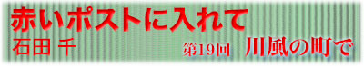

|  |
|
ひさしぶりに寄った店の、ひとけがまばらになったとき、長く仕事していると、こういうことがときどきあるんですねえ、とあるじが声をかけてくる。 ･････魚なんかおろしながら、ああ、あのお客さんどうしてるかなって、ぼんやり思ってる。そうすると、ちょうどそのお客さんが、がらって入ってくるんですねえ。 店に入ったときに、笑った目がまんまるだった。酔っ払いは店を思い出すことはあっても、思い出されているなんてつゆほども思わないから、照れくさくて晴れがましい。客思いの店は、いつも寒いときほど混んでいる。 いちばん好きなのは、熱燗、といっただけででてくる熱燗。あの方は、どうされてますか、と一緒に通ったひとたちの近況をきかれながら飲んでいた。 結婚して、よその町でお父さんお母さんになったひと、仕事で町をはなれたひと、気まずい思いで会わなくなったひと。みな便りのないのは元気の便りとそのまま遠のいている。 ひとづきあいは、波のようだが、砂浜でぼんやりしているのは変わらないから、いずれまた近しくなるときもある。客商売は、波打ちぎわにずっと立っているような心持ちなのかもしれない。 こまかい秋雨のなかに、煙のにおいがまざる夕方に、思い出すひとがいる。そのひとが旅にでて、もう十年ちかく会わない。 夕方、きゅうに電話がかかってきたのだった。東京に来ている、今日しかあいてない、という。となり町の友だちのところに止まっていたから、思い出してくれた。それで、駅で会う約束をしたのだった。 共通の友だちがいて、親しくなった。 キャンプやスキーが好きで、いつもきれいに日焼けをしていた。絵の学校に通っていてきれいな淡い色の絵を見たことがある。学校を卒業して、共通の友だちとは遠のいても、ときおり、きゅうに電話をかけてくれた。旅が多く、そのたび変わる住所を聞いておくのに、手紙はいつも戻ってきた。何年かに一度会って、旅で見たこと、会ったひとのこと、ゆっくりした声をきく。 共通の話題もすくなく、にぎやかに笑うわけでもないが、気詰まりなくはなしができる。うまがあう。 駅まで行く道には、終わりかけの金木犀が残っていた。駅で、といったから改札口をにらんでいたら、ずいぶん遅れて、ごめんね、と息をきらせて自転車で突っ込んできた。 電車で七分のところを、頑丈そうな友だちの自転車に乗ってきた。水色のふかふかした上着を着ていた。そのころフリースの服は、ほんとうにそれが必要なところに出かけていくひとたちだけが着ていた。 川原へ行こうかと歩き出したら、薄着だけど平気、とたずねて、そうだおみやげだ、と上着のポケットから洋酒のミニボトルをつぎつぎに出してみせる。 なにがいいのかわからなくて、デザインで選んだの、と言い、このひとはお酒をのまないのだったの思い出す。ジンとバーボンのほかは、お菓子作りに使うような、甘いリキュールだった。それをおなかにつめこんで、自転車にのって来てくれた。 街灯が目立ち始めた川原で水道を見つけると、ナップザックから、ちいさなコンロとポットを出して、コーヒー飲もうと湯を沸かす。 香りが漂うと、カップをならべて、なみなみと注ぐ。すこし粉っぽい、さらりとした味だった。寒いからもらったお酒入れるね、とバーボンを入れて飲むと、胃のうえがきゅうにあつい。 アメリカに行く、という。アメリカの岩に登ってみたい、ずっと練習をしていた。恋人としばらく日本を旅して、それからひとりで出かけるという。 長旅だね、荷物がたいへんだね、というと、ＣＤが二枚とウォークマン、黒いジーンズが一本。ほんとうに必要なものはそれだけだから。ひとりだけの決めごとはさびしい気がしたが、今したいことにまっすぐむかうひとだから、言わずにいた。 川風にどこかの夕飯のにおいがのってくるまで、髪がのびた、とか、こないだキムタクに似てるっていわれて悲しかったとか、ぽつぽつ話した。 橋のうえで別れるときに、実家の富山のはなしを聞いた。八尾の風の盆のはなしを熱心にした。友達の家が造り酒屋をしていて、お酒はだめなんだけど、あそこのだけおいしいって思うの、と言った。 自転車のうしろ姿に気をつけてねというと、西部劇の見送り人のように取り残された。 それから二，三度手紙を書いたが、やっぱり戻って来た。引越したことも伝えられずにいる。アメリカの岩は、大きくてたくさんあるだろうから、まだ飽きずによじ登っているのかもしれない。 冬が始まるまえに、勇敢な彼女のことをふいに思い出した日は、またきゅうに電話がかかってくるかもしれず、鈍感な虫の知らせに期待して、まっすぐ帰ることにしている。 |
| 石山千（いしやま・せん） 1968年福島県生まれ、東京育ち。 大学卒業後、作家・嵐山光三郎の助手となり現在にいたる。 2001年第一回古本小説大賞受賞。 |